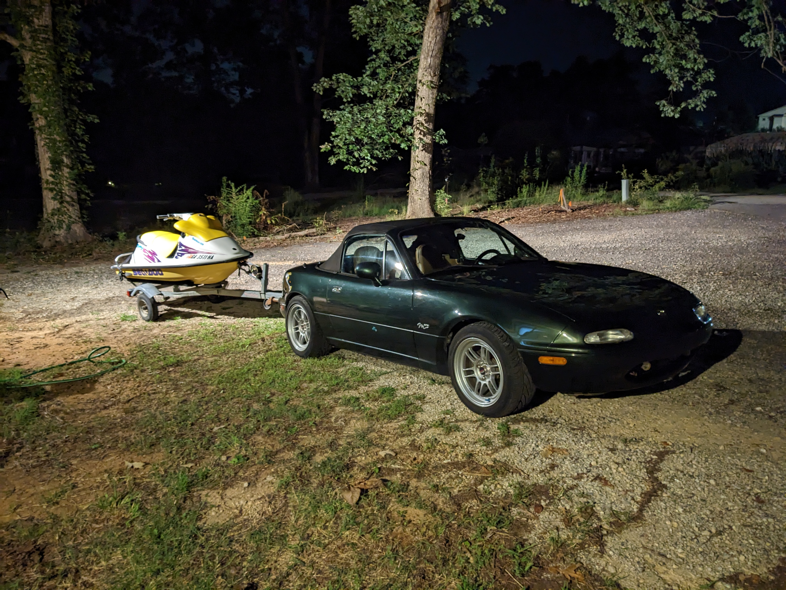

This page outlines some of the various car/jetski projects I have done.
My primary project car is a 1997 Miata. I am fortunate to be the third owner of this M edition.
Upon purchasing, I performed general maintenance tasks such as new filters (air/fuel), fluid changes (oil/coolant/trans/diff), hose replacements (coolant/vacuum/fuel),
radiator/thermostat, spark plugs, timing belt, water pump, front main seal, cranksaft seals, and valve cover gasket to name a few.
I then proceeded to perform modifications, starting with a stronger clutch kit and lighter flywheel.
This was done as the throwout bearing was beginning to make some noise, and I wanted to future proof it for a turbo setup.
Unfortunately, by the time I got to installing a turbo system a few years had past and I already needed another clutch.
The turbo system was pieced together slowly over time. The first purchase was the turbo, a Garrett SR20DET.
After spending hours hammering and torching it apart, a rebuild kit was installed to get it back to original condition.
The next purchase was the ECU, a kit from DIY Autotune. This required soldering an auxillary board to interface with the Miata sensors which connected to
the main microcontroller for real-time processing.
A custom harness was also fabricated to plug into the Miata harness.
From this point, it was mostly running oil/water lines, routing intercooler piping, higher flow rate injectors, adding gauges (boost/AFR), temp sensors, MAP sensors,
boost controller, and finally, I taught myself welding and fabricated a custom downpipe and exhaust. Although the welds looked terrible, they didn't leak and did the job.
This setup has been running reliably on a street tune and 12 pounds of boost for the past three years now.
I have a 2002 engine with variable valve timing that I am in the process of rebuilding for higher compression and boost.
{kind=link}
The completed turbo assembly, although additional wire tucking/tubing reroutes were done later.
When removing the transmission, this is one method to keep it suspended while removing bell housing bolts.
The Flying Miata stage two clutch and lightweight flywheel.

Trying to decide the initial clocking (orientation) of the turbo.
The DIY Autotune aux board with some components soldered.
The ECU Mainboard.
This is the custom harness I made to interface with the factory Miata harness.
Here I bolted the turbo to some wood to be able to torch and hammer it apart for rebuilding.

My terrible looking welds (that worked) for my downpipe and midpipe.
Jetskis
After moving closer to a lake, I decided to purchase some jetski's and now own four 90s model Seadoo's, three of which have the 787 Rotax engine. The one I use most frequently is a 97 SPX, and is the one I have worked on the most. There is a lot of additional information I will share about these projects, but for now, the below images highlight some of the work I have done, essentially rebuilding everything.First step is to replace old fuel lines and filters.
Rebuilding the Mikuni carbs, including pop-off pressure and leak-down tests.
The top end can be rebuilt with the engine still in the ski. This one clearly has damage.
The whole jetski will need to be torn down to check the lower end for damage.
The teardown, all in a days work.
Looks like something fell in the intake, busting the rotary valve.
The rotary shaft gear is toast.
All major seals/gaskets replaced, loctite set, and torqued down to spec.
Initial compression looks good! Time for engine burn-in procedures.